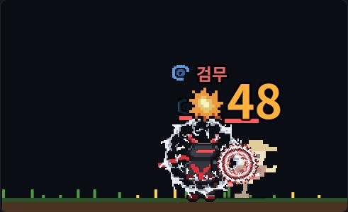
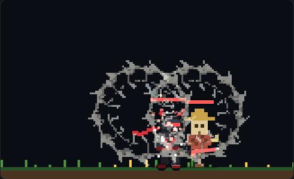
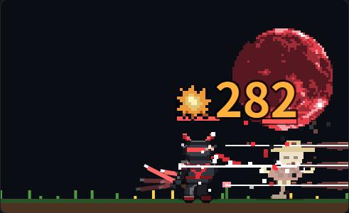
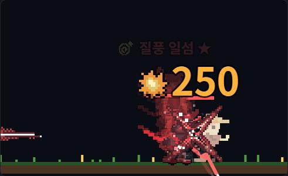
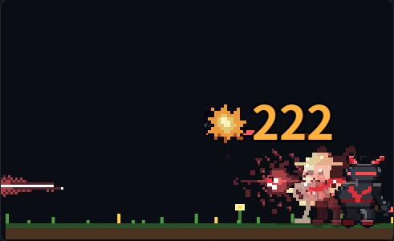
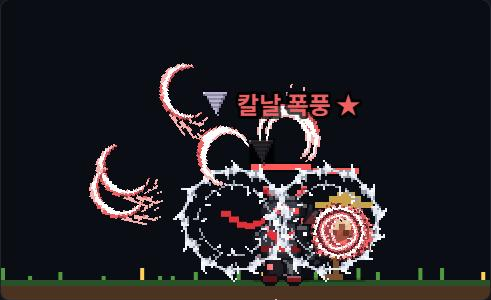
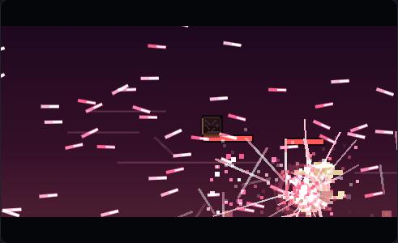
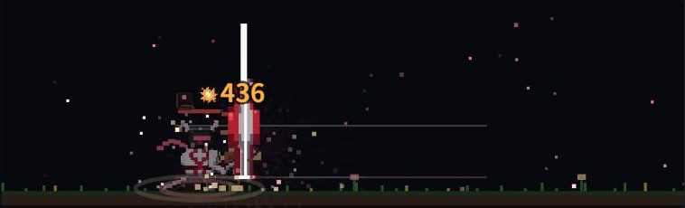
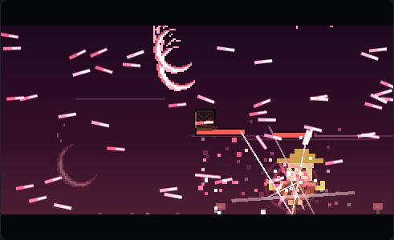
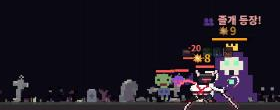

트리 스킬 연출 갤러리 · 검성 → 검신
3단계 (2026-10-17). 새 스킬 4개·융합 3개·궁극기 변형 3개의 연출 — 지금 시트(E20·K13·E11·K08·E43·F04)를 배치·개수·궤적·크기·색 램프만 바꿔 재사용, 새 그림 생성 0회. 칸(1~5)마다 모습이 바뀐다. ▶ 는 스킬 시뮬레이터로 반복 재생 (불러오는 데 10초 안팎).
새 액티브

검무 회오리 · 1칸 「검무」 은빛 칼날 회오리(E20 대회전 시트를 은색 램프로) 하나가 기사를 감싸고, 맞은 적엔 붉은 원형 칼날 자국(K13). ▶

검무 회오리 · 5칸 「천검무」 ★★★ 2칸부터 회오리 둘, 4칸부터 크게, 5칸 금빛. 제자리 폭풍(택1)은 한 단계 크게 하나, 쫓는 칼날은 대상에게 날아가 붙는다. ▶ · ▶ 제자리 폭풍 · ▶ 쫓는 칼날

섬광 베기 · 5칸 + 삼중 섬광(택1) 일섬 동작에 화면 끝에서 끝까지 그어지는 줄(E11). 삼중 섬광은 위·가운데·아래 세 줄, 잔상 베기는 0.5초 뒤 반투명 줄 한 번 더. ▶ · ▶ 잔상 베기
융합 (두 부모 연출 이어 붙이기)

질풍 일섬 질풍난무로 몰아친 뒤 마지막 타에 화면을 가르는 일섬 줄. ▶

섬광 검기 일섬이 지나간 줄을 따라 초승달 검기가 남아 차례로 터진다. ▶

칼날 폭풍 검무 회오리가 도는 동안 타격마다 검기를 사방으로 흩뿌린다. ▶
궁극기 변형 (천검 위에 덧그림, 셋 중 하나)

천검: 만검 작은 검선(F04)이 타격마다 더 쏟아진다 — 보호막에 강함 (타격 수 2배). ▶

천검: 일도양단 천검이 끝나고 한 박자 뒤, 화면이 어두워지며 붉은 바깥 줄 + 흰 속 줄이 위에서 땅까지 세로로 가른다(E11) — 피해의 80% 를 그 한 칼에. ▶

천검: 검우 하늘에서 초승달 검기가 비처럼 내린다 — 범위 +30%, 졸개에 강함. ▶
보스 벽 (4단계) · 결투·레이드 (5단계)

40 리치 (👥 졸개 · 🩸 장판) 10초마다 졸개 3마리가 보스 앞을 막는다 — 단일 대상 스킬은 졸개부터 맞는다. 장판은 기사 발밑 붉은 띠, 3초간 최대 체력 3%/초.
배치 초원 10 🔥 · 20 🔥🛡️ / 묘지 30 👥 · 40 👥🩸 / 늪 50 🩸 · 60 🩸🛡️ / 화산 70 🛡️ · 80 🛡️🔥 / 설원 90 👥 · 100 👥🔥 / 마왕성 110 🛡️ · 120 🔥👥🛡️.
배율 일반 보스 체력 ×0.8 · 중간(10칸) ×1.3·공격 ×1.1 · 지역(20칸) ×1.6·×1.3 (필드 보스 배율 대신).
답 🛡️ 연타 갈래 · 👥 검기 갈래 · 🔥 발도 갈래 · 🩸 줄기 스탯. 막혀 돌아오면 귀환 보고에 👑 리치 체력 50% 까지 · 👥 졸개 · 🩸 장판 — 추천: 👥 검기 갈래, 뚫으면 ⚔️ 벽 돌파!.
봇 측정 (열심, 15시드 중앙값) — 벽 막힘 = 그 벽에서 끝난 원정 수
| 빌드 | 10일차 최고 | 벽 10·20·…·120 | 합 |
| 지금 시스템 | 260 | 0 0 0 37 0 1 0 5 1 3 0 5 | 52 |
| a 연타 | 260 | 0 0 0 0 0 0 3 6 3 10 0 6 | 28 |
| b 발도 | 260 | 0 0 0 1 0 6 2 9 1 11 0 9 | 39 |
| k 검기 | 268 | 0 0 0 0 0 15 3 22 0 6 0 7 | 53 |
| auto (막힌 벽에 맞춰 초기화) | 252 | 0 0 0 0 0 9 1 7 2 6 0 11 | 36 |
(2026-10-18 무념 수정 뒤) 가벼운 유저: a 26 · b 11 · k 32 · auto 39 (초기화 골드가 아까워 auto 가 손해). 결투: 시즌7 프로필은 장착 4 + 궁극기 5개가 서버까지 실린다 (지금 직업은 3개 그대로). 결투는 6~7초 첫 폭딜 싸움이라 광역 갈래가 손해 → 궁극기 변형에 결투 전용 공격력(만검 ×1.2 · 일도양단 ×0.95 · 검우 ×1.4)을 달아 Lv130·170 맞대결·현행 검신 상대가 모두 60판 중 26~47승 (2026-10-18).
키스톤·변형의 전투 규칙 (3단계에서 근사 → 실제)
검의 길(평타 3타마다 모든 스킬 쿨 −0.5초, 칼끝 번쩍) · 광란(스킬 명중마다 공속 +4% 겹침, 3초) · 무한검(질풍난무 끝 30% 로 바로 한 번 더, ♾️ 표시) · 잔영(일섬 처치 → 잔상이 다음 적을 50%) · 관통(비검이 줄로 뚫음) · 쫓는 칼날(회오리 범위 +60) · 심검(평타 사거리 ×3, 평타가 푸른 검기로) · 만검귀종(검기 명중마다 다른 검기 쿨 −0.3초). 결투·레이드·봇 계산(dpsOf)은 같은 효과를 평균 배율로 본다.